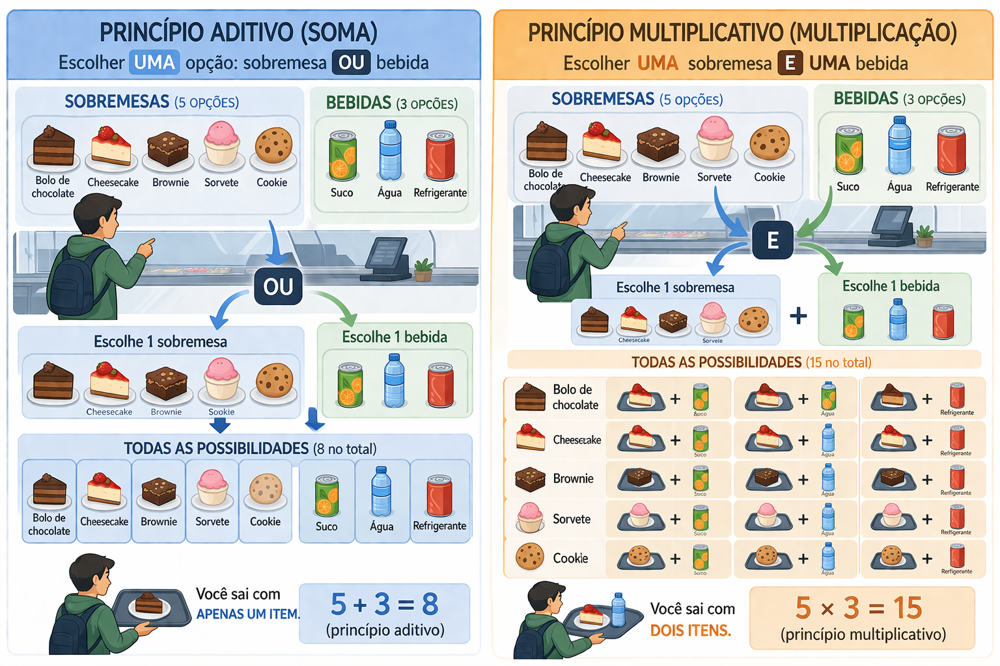

Disciplina: Matemática Discreta – Engenharia de Computação
A análise combinatória é a parte da matemática que estuda maneiras de contar possibilidades sem precisar listar todas uma por uma.
Em vez de escrever todos os casos possíveis manualmente, usamos princípios e técnicas para calcular quantas formas existem de realizar uma tarefa.
Imagine que uma pessoa vai montar uma senha de 4 dígitos. Em vez de testar e escrever todas as senhas possíveis, queremos calcular quantas possibilidades existem.
Esse tipo de problema é típico da análise combinatória.
Em muitos problemas, listar manualmente todas as possibilidades funciona apenas quando o número de casos é muito pequeno.
Quando o número de casos cresce, essa abordagem fica inviável. Por isso, a análise combinatória fornece regras de contagem.
Suponha que um estudante possa escolher um entre 3 gatos:
\[ \{\text{laranjinha, branco, mesclado}\} \]
Se a pergunta for “de quantas formas ele pode escolher o gato?”, a resposta é 3.
Esse exemplo é simples, mas já ilustra a ideia de contar possibilidades. Qual gato você vai escolher?
Representação visual do conjunto de gatos
O princípio aditivo diz:
Se uma tarefa pode ser realizada de \(m\) maneiras e uma segunda tarefa pode ser realizada de \(n\) maneiras, e essas possibilidades não acontecem ao mesmo tempo, então o total é:
\[ m + n \]
Em palavras: quando é “ou”, geralmente pensamos em soma.
Um estudante pode ir ao campus:
Como ele escolhe ônibus OU carona, o número total de possibilidades é:
\[ 4 + 2 = 6 \]
Um sistema permite autenticação de duas formas:
Há 2 formas de entrar no sistema:
\[ 1 + 1 = 2 \]
O princípio multiplicativo diz:
Se uma tarefa é realizada em duas etapas, sendo a primeira com \(m\) possibilidades e a segunda com \(n\) possibilidades, então o número total de maneiras de realizar a tarefa completa é:
\[ m \cdot n \]
Em palavras: quando é “e depois”, geralmente pensamos em multiplicação.
Uma pessoa vai montar um lanche escolhendo:
Como a escolha acontece em duas etapas, o total de combinações é:
\[ 3 \cdot 4 = 12 \]
Suponha uma senha com 3 dígitos, e em cada posição podemos escolher um número de 0 a 9.
Para a primeira posição há 10 escolhas. Para a segunda posição, mais 10. Para a terceira posição, mais 10.
Logo, o número total de senhas possíveis é:
\[ 10 \cdot 10 \cdot 10 = 10^3 = 1000 \]
Imagine que um sistema permite configurar:
O número total de configurações possíveis é:
\[ 2 \cdot 3 \cdot 2 = 12 \]
Esse raciocínio é muito comum ao estudar espaço de estados, configurações de software e testes combinatórios.
Um dos maiores desafios no início é decidir se um problema deve ser resolvido com soma ou com multiplicação.
Uma pessoa pode escolher:
Como é uma escolha entre alternativas, usamos soma:
\[ 5 + 3 = 8 \]
Agora, se ela for escolher:
Como as duas escolhas acontecem juntas, usamos multiplicação:
\[ 5 \cdot 3 = 15 \]
Comparação entre os princípios aditivo e multiplicativo Obs: Falhou no bolo de chocolate, então use a imaginação!

Um estudante pode escolher uma disciplina optativa entre:
Passo 1: identificar o tipo de situação.
O estudante vai escolher uma disciplina da primeira área ou da segunda.
Passo 2: aplicar o princípio adequado.
Como é “ou”, usamos o princípio aditivo.
Passo 3: calcular.
\[ 4 + 3 = 7 \]
Resposta: existem 7 possibilidades.
Um identificador é formado por:
Passo 1: identificar as etapas.
Temos 5 posições: letra, letra, dígito, dígito, dígito.
Passo 2: contar as possibilidades por etapa.
Passo 3: multiplicar.
\[ 26 \cdot 26 \cdot 10 \cdot 10 \cdot 10 = 676000 \]
Resposta: existem 676.000 identificadores possíveis.
Ao projetar um sistema de autenticação, precisamos estimar quantas senhas podem existir para avaliar segurança, complexidade e resistência a ataques.
Quando um sistema possui várias opções de entrada, a quantidade de combinações possíveis pode crescer rapidamente. A análise combinatória ajuda a entender o tamanho do espaço de testes.
Sistemas com múltiplos modos, temas, permissões ou recursos opcionais geram muitas combinações. Saber contar essas combinações ajuda no planejamento e na análise de casos.
O algoritmo a seguir calcula o número de senhas numéricas de 4 dígitos, assumindo que cada posição pode receber qualquer número de 0 a 9.
quantidade_posicoes = 4
opcoes_por_posicao = 10
total = opcoes_por_posicao ** quantidade_posicoes
print("Quantidade total de senhas:", total)Esse código implementa diretamente o princípio multiplicativo:
\[ 10 \cdot 10 \cdot 10 \cdot 10 = 10^4 \]
Alterem ___ e calculem a quantidade de opções:
Uma lanchonete oferece 6 tipos de salgado e 4 tipos de suco. De quantas formas uma pessoa pode escolher:
No primeiro caso, é uma escolha entre alternativas:
\[ 6 + 4 = 10 \]
No segundo caso, são duas etapas:
\[ 6 \cdot 4 = 24 \]
Uma placa de identificação é formada por 2 letras seguidas de 2 algarismos. Quantas placas diferentes podem ser formadas, assumindo 26 letras e 10 dígitos?
São 4 etapas:
\[ 26 \cdot 26 \cdot 10 \cdot 10 = 67600 \]
Em um sistema, o usuário pode escolher um entre 3 idiomas e um entre 2 temas de interface. Quantas configurações diferentes existem?
Como são duas escolhas realizadas juntas:
\[ 3 \cdot 2 = 6 \]
Isso acontece quando o problema tem etapas, mas é tratado como alternativas.
Isso acontece quando o problema descreve uma escolha entre opções, mas é tratado como se precisasse fazer todas as escolhas.
Antes de aplicar qualquer fórmula ou princípio, é essencial entender exatamente o que o enunciado pede.